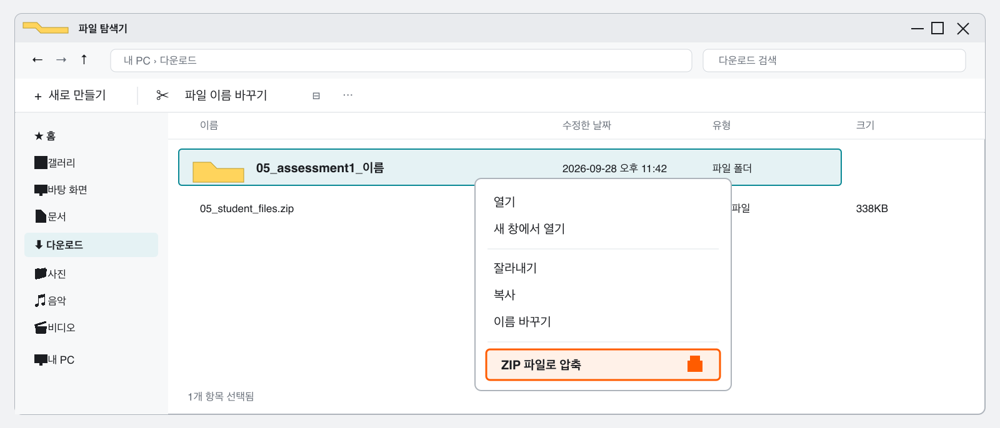

수행평가 1
AI 활용 데이터 시각화实践考核 1
AI 应用数据可视化
평가를 시작할 준비가 되었는지 확인한다确认是否已做好开始考核的准备 실습实操
수행평가를 시작하기 전에 실행 환경과 파일을 먼저 확인합니다. 아래 항목이 모두 준비되어야 평가 도중 설치나 파일 찾기로 시간을 쓰지 않습니다. 준비되지 않은 항목이 있으면 시작하기 전에 선생님에게 알리세요.开始实践考核前，先检查运行环境和文件。下面各项都准备好后，才能避免在考核途中把时间花在安装或查找文件上。如有未准备好的项目，请在开始前告诉老师。
- VS Code에서
05폴더 전체를 열었다.已在 VS Code 中打开整个05文件夹。 uv sync가 끝나.venv가 만들어졌다.uv sync已完成并生成.venv。notebooks폴더의05_assessment1.ipynb를 열었다.已打开notebooks文件夹中的05_assessment1.ipynb。- Notebook 오른쪽 위 커널이
05폴더의.venv이다.Notebook 右上角的内核是05文件夹中的.venv。 data폴더에 제공된 CSV 하나가 있다.data文件夹中有老师提供的一份 CSV。- OpenCode를 같은
05폴더에서 열었다.已在同一个05文件夹中打开 OpenCode。
준비 점검에서 오류가 나면 평가를 시작하지 말고 선생님에게 알립니다.准备检查中如出现错误，不要开始考核，要先告诉老师。
Notebook과 AI 대화에 판단 과정을 남긴다在 Notebook 与 AI 对话中保留判断过程 핵심核心
평가를 시작하면 5-1에서 배운 방향에 따라 스스로 작업합니다. 아래 항목은 반드시 Notebook이나 OpenCode 대화에서 확인할 수 있어야 합니다. 정해진 답이나 그래프 종류는 없지만, 선택한 이유와 확인 과정은 빠지면 안 됩니다.开始考核后，请按照 5-1 学过的方向独立完成。下面各项必须能在 Notebook 或 OpenCode 对话中找到。答案和图表类型不固定，但不能缺少选择理由和检查过程。
- 어떤 데이터인지와 한 행·각 열의 값이 무엇을 뜻하는지 파악한다.弄清这是什么数据，以及一行和各列的数值分别代表什么。
- 이 자료에서 시각화할 내용을 정한다.确定要从这份数据中可视化什么。
- 이 데이터를 시각화하는 데 알맞은 그래프와 선택 이유를 적는다.写下适合这份数据的图表以及选择理由。
- AI가 작업 전에 제시한 계획을 읽고 승인하거나 고친 내용을 남긴다.保留阅读 AI 工作计划后批准或修改的内容。
- 직접 실행한 코드와 그래프 결과를 Notebook에 남긴다.在 Notebook 中保留亲自运行的代码和图表结果。
- 결과를 검토하고 이 그래프를 통해 보이는 내용을 적는다.检查结果，并写下通过这张图能看出的内容。
제출 전에 결과와 기록을 다시 확인한다提交前重新检查结果与记录 실습实操
작업을 마쳤다고 바로 압축하지 않습니다. Notebook을 처음부터 다시 실행해 같은 결과가 나오는지 확인하고, 기록하지 않은 판단이 없는지 살펴봅니다. 이 점검이 끝난 뒤에 제출용 사본을 만듭니다.完成任务后不要立刻压缩。先从头重新运行 Notebook，确认能得到相同结果，并检查是否有遗漏的判断记录。完成这些检查后，再制作提交副本。
- Notebook의 모든 셀을 처음부터 다시 실행했다.已从头重新运行 Notebook 的所有单元。
- 코드와 그래프가 오류 없이 다시 나타났다.代码和图表已无错误地重新显示。
- 그래프의 항목과 값이 원본 자료와 실행 결과에 맞게 반영되었다.图表中的项目和数值与原始数据及运行结果相符。
- 선택 이유, AI 계획 확인, 검토 내용, 그래프를 통해 보이는 내용을 모두 적었다.已写下选择理由、AI 计划检查、结果检查以及通过图表能看出的内容。
- 그래프가 화면에 나온 뒤
Ctrl+S로 저장하고, Notebook을 다시 열어 그래프가 남아 있는지 확인했다.图表显示后按Ctrl+S保存，并重新打开 Notebook 确认图表仍然存在。
그래프를 실행하지 않았거나 출력이 보이기 전에 저장하면, 선생님이 제출 파일을 열었을 때 그래프가 보이지 않습니다. 반드시 그래프가 나온 뒤 저장하세요.如果没有运行图表，或在输出出现前就保存，老师打开提交文件时将看不到图表。请务必在图表显示后再保存。
관련된 OpenCode 대화를 모두 JSON으로 내보낸다把所有相关 OpenCode 对话导出为 JSON 실습实操
수행평가 과정이 여러 대화에 나뉘었다면 그 대화도 모두 제출 대상입니다. OpenCode에게 이번 수행평가와 관련된 대화를 찾아 각각 JSON 파일로 저장하게 합니다. 학생이 명령을 직접 입력할 필요는 없습니다.如果实践考核过程分散在多个对话中，这些对话都要提交。请让 OpenCode 找出与本次考核有关的对话，并分别保存为 JSON 文件。学生不需要亲自输入命令。
이번 수행평가와 관련된 OpenCode session을 모두 확인해서 evidence 폴더에 JSON으로 내보내 줘. 각 session을 opencode-session-1.json, opencode-session-2.json처럼 번호를 붙여 저장해 줘. 각 파일이 비어 있지 않은지도 확인하고, 저장한 파일을 알려 줘.
请确认与本次实践考核有关的所有 OpenCode session，并把它们导出为 JSON 保存到 evidence 文件夹。 请将每个 session 分别保存为 opencode-session-1.json、opencode-session-2.json 等带编号的文件。 确认每个文件都不是空文件，并告诉我保存了哪些文件。
evidence폴더에 관련 대화 수만큼 JSON 파일이 있다.evidence文件夹中的 JSON 文件数量与相关对话数量一致。- 각 JSON 파일이 0KB가 아니고 내용을 열어 볼 수 있다.每个 JSON 文件都不是 0KB，并且可以打开查看内容。
- 다른 수업의 대화 기록은 들어 있지 않다.没有包含其他课程的对话记录。
원본은 두고 제출용 사본만 정리해 압축한다保留原文件夹，只整理提交副本并压缩 실습实操
작업하던 05 폴더에서 파일을 바로 지우지 않습니다. 먼저 폴더 전체를 복사해 제출용 사본을 만들고, 사본에서 제출하지 않을 항목만 지웁니다. 필요한 파일이 남았는지 확인한 뒤 그 사본을 ZIP으로 압축합니다.不要直接删除正在使用的 05 文件夹中的文件。先复制整个文件夹作为提交副本，只在副本中删除不提交的项目。确认所需文件都保留后，再把副本压缩为 ZIP。
- 파일 탐색기에서
05폴더를 복사해 같은 위치에 붙여넣는다.在文件资源管理器中复制05文件夹，并粘贴到同一位置。 - 복사한 폴더 이름을
05_assessment1_이름으로 바꾼다.把复制的文件夹重命名为05_assessment1_姓名。 - 제출용 사본에서
.venv,__pycache__, 캐시·임시 파일만 지운다.只在提交副本中删除.venv、__pycache__、缓存和临时文件。 README.md,pyproject.toml,uv.lock, Notebook, CSV, 관련 OpenCode 대화 JSON이 남아 있는지 확인한다.确认README.md、pyproject.toml、uv.lock、Notebook、CSV 和相关 OpenCode 对话 JSON 都还在。- 사본 폴더를 마우스 오른쪽 단추로 누르고 더 많은 옵션 표시 → 보내기 → 압축(ZIP) 폴더를 고른다.右键单击副本文件夹，选择显示更多选项 → 发送到 → 压缩(zipped)文件夹。

학교 PC에서 마우스 오른쪽 메뉴에 ZIP 파일로 압축이 바로 보이면 그 항목을 눌러도 됩니다. 완성된 파일 이름이 05_assessment1_이름.zip인지 확인합니다.如果学校电脑的右键菜单中直接显示压缩为 ZIP 文件，也可以直接选择。确认最终文件名是 05_assessment1_姓名.zip。
ZIP 하나를 올리고 제출 완료 화면을 확인한다上传一个 ZIP 并确认提交完成 실습实操
제출용 ZIP을 만들었으면 선생님이 안내한 Google Form을 엽니다. 파일을 고른 뒤 화면에 표시된 파일명이 내 ZIP과 같은지 확인하고, 제출 완료 화면이 나올 때까지 창을 닫지 않습니다.制作好提交用 ZIP 后，打开老师提供的 Google Form。选择文件后，确认页面上显示的文件名与自己的 ZIP 一致；在看到提交完成画面前不要关闭窗口。
https://docs.google.com/forms/d/e/1FAIpQLSe87c6APvABIz2IdczisycuMaOb6qG2h9Cg3FQhvx5uTwHwiA/viewform?usp=publish-editor
https://docs.google.com/forms/d/e/1FAIpQLSe87c6APvABIz2IdczisycuMaOb6qG2h9Cg3FQhvx5uTwHwiA/viewform?usp=publish-editor
- Google 계정에 로그인하고 제출 링크를 연다.登录 Google 账号并打开提交链接。
- 학년과 이름을 입력한다.填写年级和姓名。
05_assessment1_이름.zip하나를 올린다.上传一个05_assessment1_姓名.zip。- 제출 버튼을 누르기 전에 업로드된 파일명과 ZIP 내용을 마지막으로 확인한다.点击提交前，最后确认上传文件名和 ZIP 内容。
- 제출 버튼을 누르고 제출 완료 메시지를 확인한다.点击提交，并确认出现提交完成提示。
파일 용량이 너무 크면 ZIP 안에 .venv가 들어갔는지 먼저 확인합니다. 다른 웹사이트에 올리지 말고 선생님에게 알립니다.如果文件过大，先检查 ZIP 中是否包含 .venv。不要上传到其他网站，要告诉老师。